Excel编程实例
程序的功能：读取设备信息。在Excel中使用VBA功能，也可以对仪器进行操作。本实例中需要安装Excel和Visual
Basic。
1. 在Excel的一个单元格中填入设备资源描述符。单击菜单选项卡中的“开发工具”选择Visual Basic选项。如下列图所示：
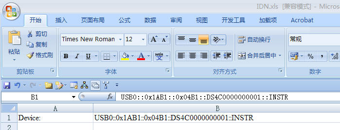
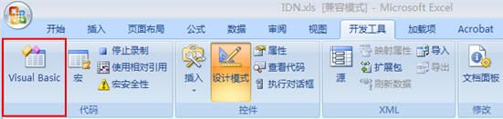
2. 在Visual Basic页面的菜单栏选择“工具（T）”单击“引用（R）”，在弹出的对话框中选中VISA Library，单击确定按钮即可引用VISA Library。如下列图所示：
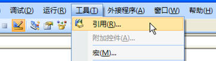
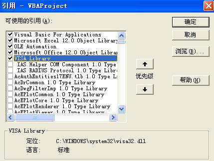
3. 打开设备，设备资源描述符在SHEET1、CELLS(1,2)中。
viErr = visa.viOpenDefaultRM(viDefRm)
viErr = visa.viOpen(viDefRm, Sheet1.Cells(1, 2), 0, 5000, viDevice)
cmdStr = "*IDN?"
viErr = visa.viWrite(viDevice, cmdStr, Len(cmdStr), ret)
viErr = visa.viRead(viDevice, idnStr, 128, ret)
Sheet1.Cells(2, 2) = idnStr
5. 关闭设备。
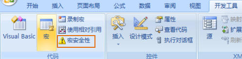
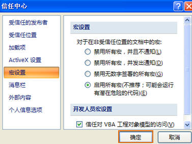
7. 单击“宏”选项，在弹出的对话框中单击“执行”按钮，如下图所示：
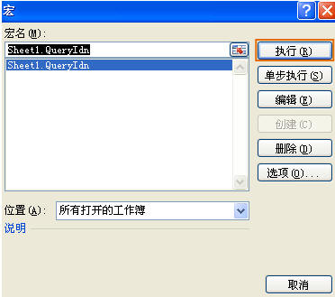
8. 添加按钮控件。单击“插入”，在“表单控件”选择按钮即可。如下列图所示：
|
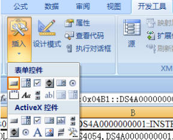 |
|
9. 在按钮上单击右键，选择“指定宏（N）”弹出“指定宏”对话框，单击确定即可运行程序。如下列图所示：
|
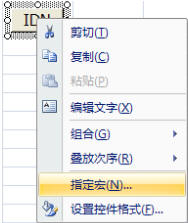 |
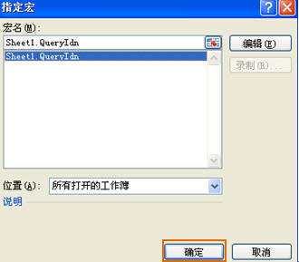 |
运行程序
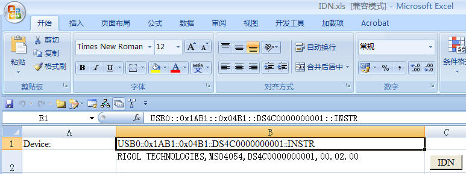